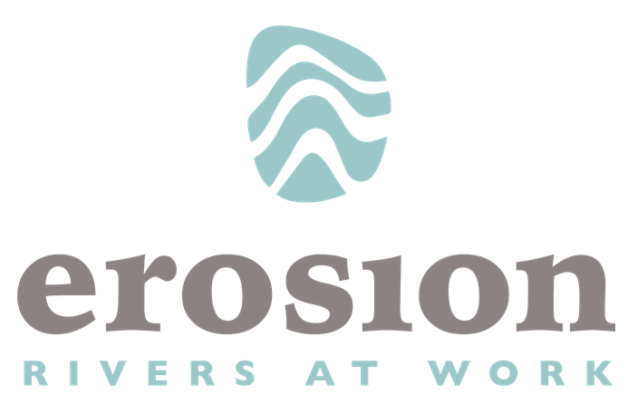
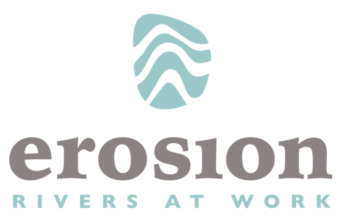

1. Introduktion¶
pgRouting lägger till routingfunktionalitet till PostGIS.
Se innehåll för fullständigt innehåll i FOSS4G Belém-workshopen. Denna workshop täcker två nivåer för att använda pgRouting: Basic och Advanced.
1.1. Grundläggande¶
kommer att demonstrera routningsfunktionaliteten genom att ge exempel med hjälp av OpenStreetMap vägnätsdata från Belém. Vi tar upp ämnen från hur man förbereder data, gör routingfrågor, förstår resultaten till att skriva en anpassad ”plpgsql”-funktion som kan integreras med andra FOSS-verktyg.
Installera pgRouting.
Skapa en routningstopologi.
Importera data från vägnätverk (OpenStreetMap).
Använda pgRouting-algoritmer.
Skriva avancerade frågor.
Skriva en anpassad PostgreSQL lagrad procedur i plpgsql
Förutsättningar
Workshopnivå: Grundläggande.
Tidigare kunskap: SQL (PostgreSQL, PostGIS)
Utrustning: OSGeoLive (17)
1.2. Avancerat¶
pgRouting är ett utbyggbart bibliotek med öppen källkod som tillhandahåller en mängd olika verktyg för grafalgoritmer, detta är inte begränsat till routing för fordon. Den avancerade delen täcker flera grafproblem som kan lösas med pgRouting.
Förutsättningar
Workshopnivå: Avancerad.
Tidigare kunskap: SQL (PostgreSQL, PostGIS, pgRouting)
Utrustning: OSGeoLive (17)
1.3. Tack till¶
Sponsrad av
 

Utvecklare och presentatörer av FOSS4G Belém-workshopen:
Vicky Vergara är en frilansande utvecklare från Mexiko. Hon är kärnutvecklare av pgRouting-projektet och GSoC-mentor. OSGeo Charter-medlem.
Ramón Ríos är en frilansande utvecklare från Mexiko. Ledande ingenjör för ParkUpFront
Tidigare och aktuella handledare och utvecklare
Daniel Kastl, José Ríos, Ko Nagase, Stephen Woodbridge, Swapnil Joshi, Rajat Shinde, Ramón Ríos, Rohith Reddy, Vicky Vergara
Tidigare och aktuella supportrar
Georepublic, Paragon Corporation
Licens
Detta arbete är licensierat under en Creative Commons Attribution-Share Alike 3.0 License.